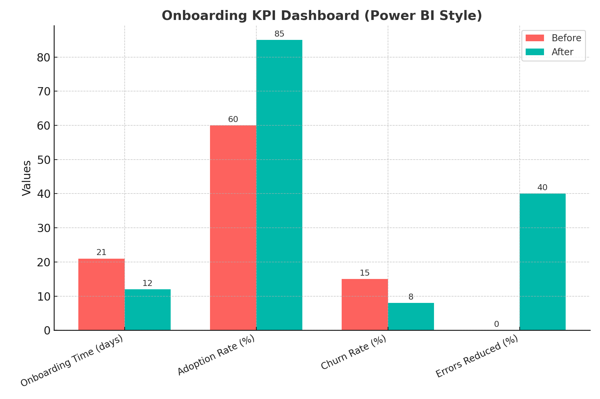
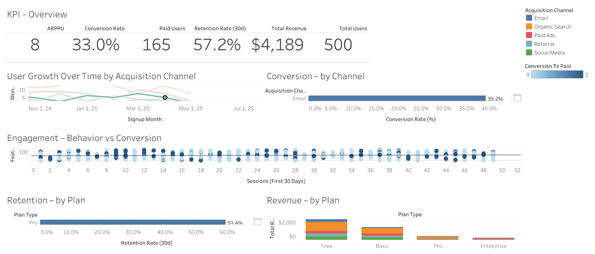
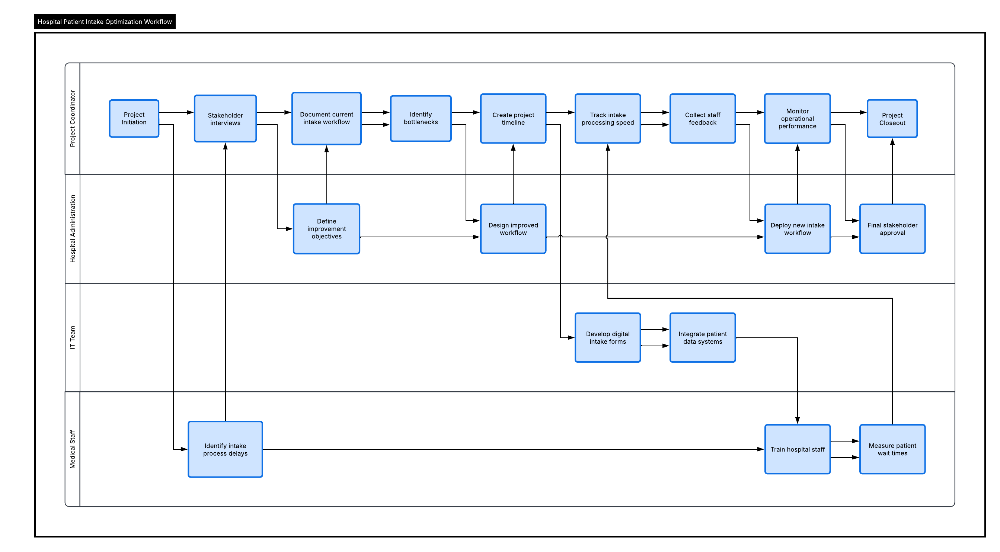
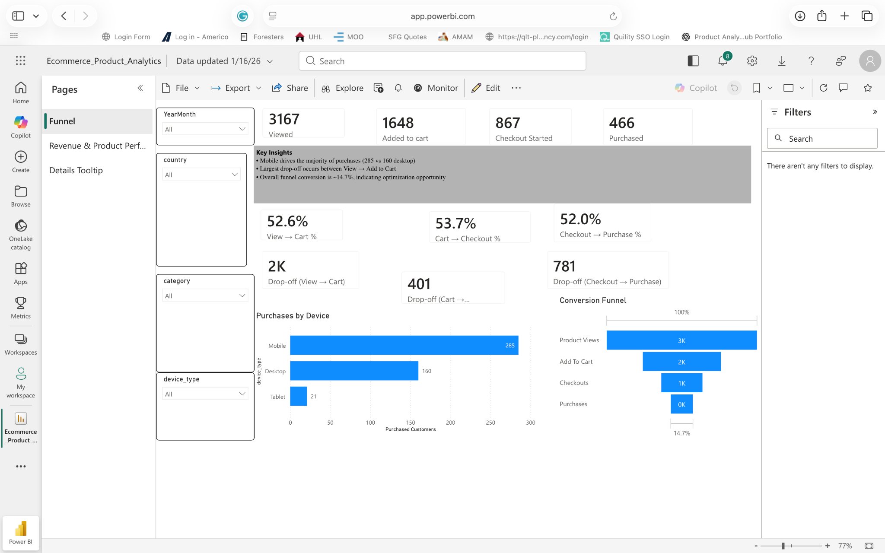
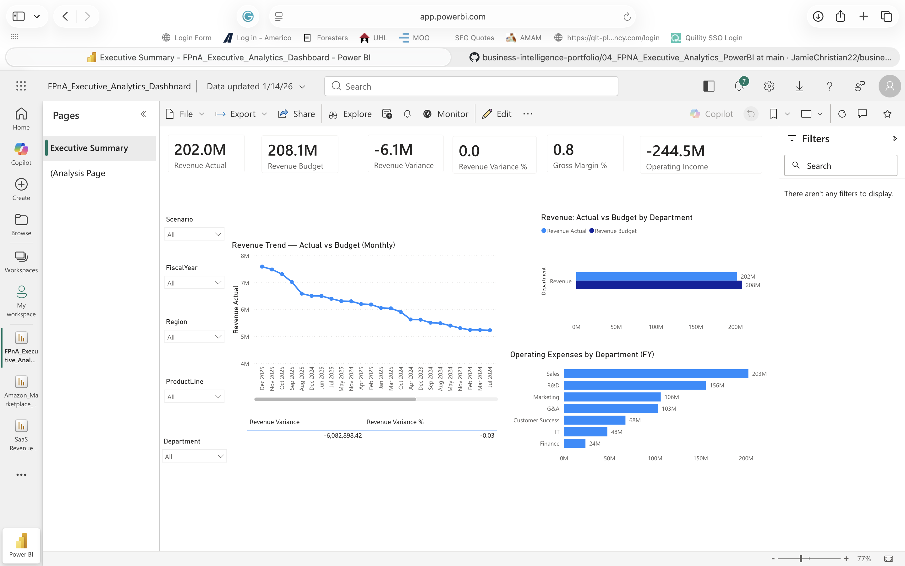
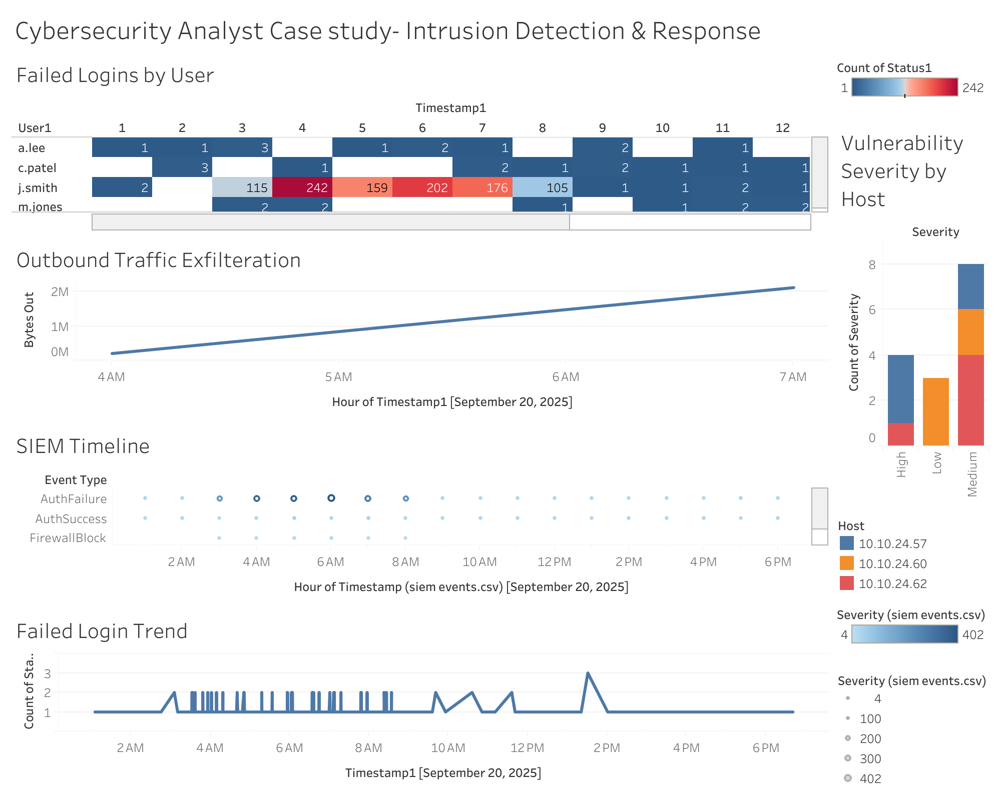
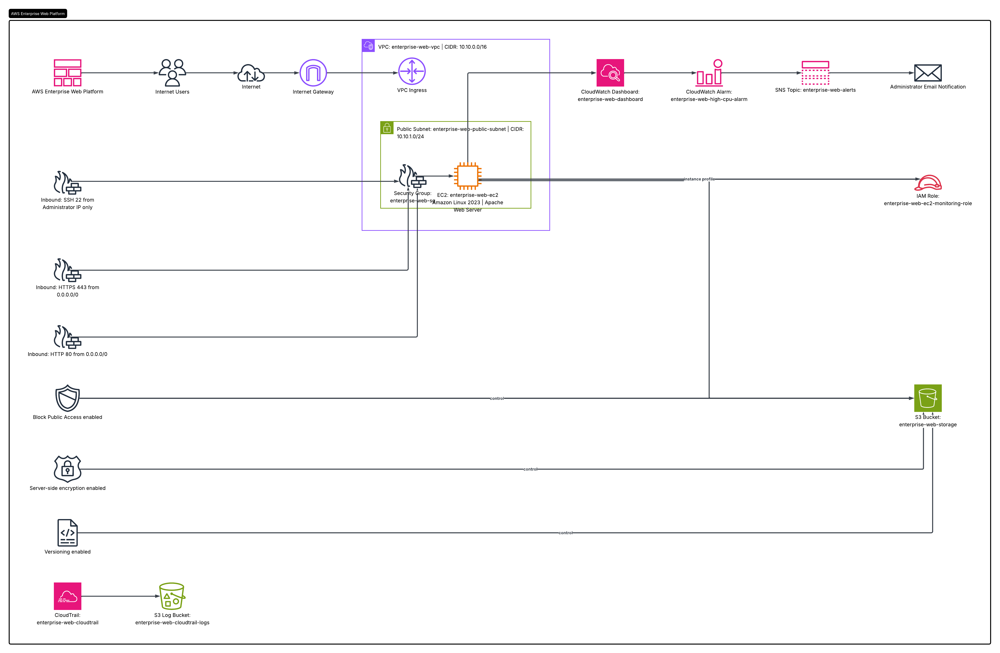
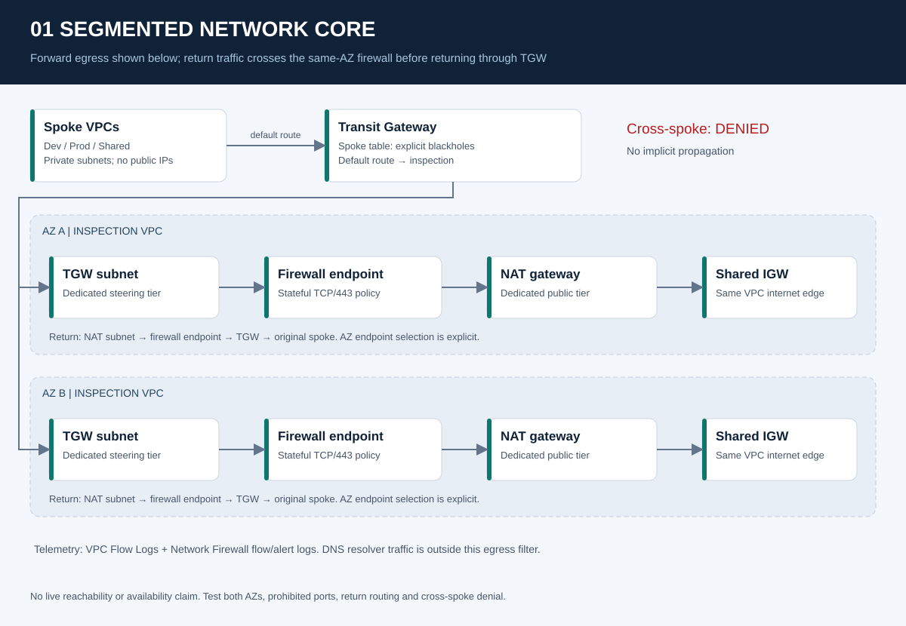

Business analysisBusiness Analyst Portfolio
Requirements, workflow modeling, systems analysis, traceability, and business reporting case studies.
I'm Jamie Christian II. I build project-based case studies spanning business analysis, data analytics, product strategy, cloud infrastructure, IT operations, and cybersecurity. Explore the work, source artifacts, and decisions behind each solution.
Choose a focus area. Each card opens the corresponding GitHub repository with code, project documentation, and available supporting artifacts.

Business analysisRequirements, workflow modeling, systems analysis, traceability, and business reporting case studies.

Product managementSix product case studies exploring conversion, retention, adoption, pricing, and evidence-led decisions.

Project deliverySimulated coordination workflows, RAID management, evidence disclosures, and execution artifacts.

Data analyticsSQL, Python, reproducible analysis, data quality, automated checks, and business recommendations.

Business intelligenceExecutive dashboards, SQL transformations, KPI definitions, business insights, and reporting workflows.
Classification, forecasting, fraud screening, and NLP projects with model evaluation workflows.

CybersecuritySynthetic incident investigation, detections, SQL correlation, evidence mapping, and validation.

Cloud engineeringAWS, Azure, and Google Cloud infrastructure concepts, IaC, operations, and architecture documentation.

Security engineeringTerraform-based AWS security laboratories for networking, identity, detection, and protected services.
Showing all 9 featured projects.
Requirements, process improvement, project delivery, Agile and stakeholder reporting.
Explore repositories ↗Product discovery, prioritization, business intelligence, statistical analysis and dashboards.
Explore Product Owner portfolio ↗Infrastructure, support, IAM, incident response, Terraform and technical operations.
Explore cloud platform projects ↗I hold a B.S. in Entrepreneurial Management and have experience in insurance and business operations. My independent projects connect business requirements, process analysis, technical implementation, and decision-making.
The throughline is making work understandable: defining the problem, showing the method, documenting assumptions, and giving reviewers a practical way to inspect the result.
For portfolio discussions, professional opportunities, and potential project collaborations, reach out on LinkedIn or explore the GitHub repositories. Support for ongoing independent projects is also available through GitHub Sponsors.